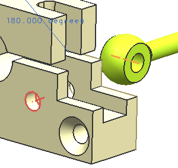
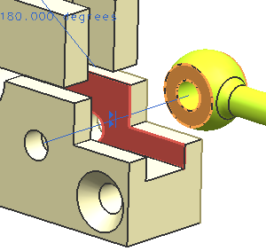
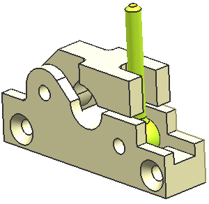

添加并约束吊环(lug)到装配中
-
使用添加组件
 命令来添加 des15_lug_clamp_b 到装配中，对于定位选项，使用通过约束。
命令来添加 des15_lug_clamp_b 到装配中，对于定位选项，使用通过约束。 -
使用下图来对齐 des15_lug_clamp_b 的中心线和 des15_base_clamp_b 上的孔。

-
在吊环的两个平面与虎钳台的两个内表面间创建一个中心2对2约束。

-
在吊环的圆柱杆与下图所示的面之间创建一个90度的角度约束。

在执行完这一步后，装配看起来应该和下图类似。
提示
为了更清楚地看见组件，在装配级别的约束显示已关闭。
